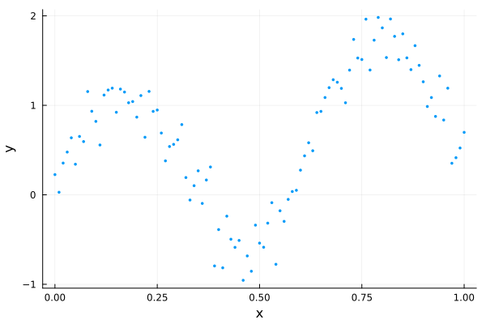

Initializing HMC with Pathfinder
The MCMC warm-up phase
When using MCMC to draw samples from some target distribution, there is often a lengthy warm-up phase with 2 phases:
- converge to the typical set (the region of the target distribution where the bulk of the probability mass is located)
- adapt any tunable parameters of the MCMC sampler (optional)
While (1) often happens fairly quickly, (2) usually requires a lengthy exploration of the typical set to iteratively adapt parameters suitable for further exploration. An example is the widely used windowed adaptation scheme of Hamiltonian Monte Carlo (HMC) in Stan [3], where a step size and positive definite metric (aka mass matrix) are adapted. For posteriors with complex geometry, the adaptation phase can require many evaluations of the gradient of the log density function of the target distribution.
Pathfinder can be used to initialize MCMC, and in particular HMC, in 3 ways:
- Initialize MCMC from one of Pathfinder's draws (replace phase 1 of the warm-up).
- Initialize an HMC metric adaptation from the inverse of the covariance of the multivariate normal approximation (replace the first window of phase 2 of the warm-up).
- Use the inverse of the covariance as the metric without further adaptation (replace phase 2 of the warm-up).
This tutorial demonstrates all three approaches with DynamicHMC.jl and AdvancedHMC.jl. Both of these packages have standalone implementations of adaptive HMC (aka NUTS) and can be used independently of any probabilistic programming language (PPL). Both the Turing and Soss PPLs have some DynamicHMC integration, while Turing also integrates with AdvancedHMC.
For demonstration purposes, we'll use the following dummy data:
using LinearAlgebra, Pathfinder, Random, StatsFuns, StatsPlots
Random.seed!(91)
x = 0:0.01:1
y = @. sin(10x) + randn() * 0.2 + x
scatter(x, y; xlabel="x", ylabel="y", legend=false, msw=0, ms=2)
We'll fit this using a simple polynomial regression model:
\[\begin{aligned} \sigma &\sim \text{Half-Normal}(\mu=0, \sigma=1)\\ \alpha, \beta_j &\sim \mathrm{Normal}(\mu=0, \sigma=1)\\ \hat{y}_i &= \alpha + \sum_{j=1}^J x_i^j \beta_j\\ y_i &\sim \mathrm{Normal}(\mu=\hat{y}_i, \sigma=\sigma) \end{aligned}\]
We just need to implement the log-density function of the resulting posterior.
struct RegressionProblem{X,Z,Y}
x::X
J::Int
z::Z
y::Y
end
function RegressionProblem(x, J, y)
z = x .* (1:J)'
return RegressionProblem(x, J, z, y)
end
function (prob::RegressionProblem)(θ)
(; σ, α, β) = θ
(; z, y) = prob
lp = normlogpdf(σ) + logtwo
lp += normlogpdf(α)
lp += sum(normlogpdf, β)
y_hat = muladd(z, β, α)
lp += sum(eachindex(y_hat, y)) do i
return normlogpdf(y_hat[i], σ, y[i])
end
return lp
end
J = 3
dim = J + 2
model = RegressionProblem(x, J, y)
ndraws = 1_000;DynamicHMC.jl
To use DynamicHMC, we first need to transform our model to an unconstrained space using TransformVariables.jl and wrap it in a type that implements the LogDensityProblems interface (see DynamicHMC's worked example):
using DynamicHMC, ForwardDiff, LogDensityProblems, LogDensityProblemsAD, TransformVariables
using TransformedLogDensities: TransformedLogDensity
transform = as((σ=asℝ₊, α=asℝ, β=as(Array, J)))
P = TransformedLogDensity(transform, model)
∇P = ADgradient(:ForwardDiff, P)ForwardDiff AD wrapper for TransformedLogDensity of dimension 5, w/ chunk size 5Pathfinder can take any object that implements this interface.
result_pf = pathfinder(∇P)Single-path Pathfinder result
tries: 1
draws: 5
fit iteration: 15 (total: 18)
fit ELBO: -117.64 ± 0.23
fit distribution: MvNormal{Float64, Pathfinder.WoodburyPDMat{Float64, LinearAlgebra.Diagonal{Float64, Vector{Float64}}, Matrix{Float64}, Matrix{Float64}, Pathfinder.WoodburyPDFactorization{Float64, LinearAlgebra.Diagonal{Float64, Vector{Float64}}, LinearAlgebra.QRCompactWYQ{Float64, Matrix{Float64}, Matrix{Float64}}, LinearAlgebra.UpperTriangular{Float64, Matrix{Float64}}}}, Vector{Float64}}(
dim: 5
μ: [-0.35193742737688777, 0.24690060220372106, 0.058275882395669526, 0.11655175981944875, 0.1748276485411877]
Σ: [0.004969588924912717 -0.00022940256988482796 … 0.0005296595888833644 -0.00023978958346961997; -0.0002294025698848301 0.0258505173524506 … -0.017788412328272638 -0.00020020475341149188; … ; 0.0005296595888833648 -0.017788412328272833 … 0.743957303003753 -0.43851071755252763; -0.00023978958346961606 -0.00020020475341137067 … -0.43851071755252674 0.2653446953844584]
)
init_params = result_pf.draws[:, 1]5-element Vector{Float64}:
-0.2447069082536234
0.29076814691738456
0.501652842232575
-1.6245650931617113
1.1759862272969104inv_metric = result_pf.fit_distribution.Σ5×5 Pathfinder.WoodburyPDMat{Float64, LinearAlgebra.Diagonal{Float64, Vector{Float64}}, Matrix{Float64}, Matrix{Float64}, Pathfinder.WoodburyPDFactorization{Float64, LinearAlgebra.Diagonal{Float64, Vector{Float64}}, LinearAlgebra.QRCompactWYQ{Float64, Matrix{Float64}, Matrix{Float64}}, LinearAlgebra.UpperTriangular{Float64, Matrix{Float64}}}}:
0.00496959 -0.000229403 -4.15468e-5 0.00052966 -0.00023979
-0.000229403 0.0258505 -0.00138677 -0.0177884 -0.000200205
-4.15468e-5 -0.00138677 0.0389324 -0.145779 0.0852796
0.00052966 -0.0177884 -0.145779 0.743957 -0.438511
-0.00023979 -0.000200205 0.0852796 -0.438511 0.265345Initializing from Pathfinder's draws
Here we just need to pass one of the draws as the initial point q:
result_dhmc1 = mcmc_with_warmup(
Random.default_rng(),
∇P,
ndraws;
initialization=(; q=init_params),
reporter=NoProgressReport(),
)(posterior_matrix = [-0.3627746078795413 -0.2550812910735402 … -0.2184795482211374 -0.22821897640324076; 0.1689835557003898 0.16191448702581093 … 0.22695737674691013 0.10476859223981626; … ; -0.9664277452838413 0.3500841785417582 … -0.49601710175705616 -0.336568225352151; 1.1384574308529787 -0.14545974996100447 … 0.4203539294984748 0.6164295042818162], tree_statistics = DynamicHMC.TreeStatisticsNUTS[DynamicHMC.TreeStatisticsNUTS(-118.84333777454655, 6, turning at positions -53:10, 0.6868649060141462, 63, DynamicHMC.Directions(0x883dc00a)), DynamicHMC.TreeStatisticsNUTS(-119.34814610899335, 6, turning at positions 9:12, 0.8026709871355544, 75, DynamicHMC.Directions(0x4f429dc0)), DynamicHMC.TreeStatisticsNUTS(-116.88753827391245, 6, turning at positions -29:-92, 0.9886541319707292, 127, DynamicHMC.Directions(0xba9dbc23)), DynamicHMC.TreeStatisticsNUTS(-115.71403117031228, 6, turning at positions -37:26, 0.9812510799614861, 63, DynamicHMC.Directions(0x819a3a5a)), DynamicHMC.TreeStatisticsNUTS(-116.66104595420013, 6, turning at positions -13:50, 0.9703539206543615, 63, DynamicHMC.Directions(0x8821f1f2)), DynamicHMC.TreeStatisticsNUTS(-115.13824205248595, 6, turning at positions 4:67, 0.8885450409667264, 127, DynamicHMC.Directions(0x105f1543)), DynamicHMC.TreeStatisticsNUTS(-113.86566286571532, 6, turning at positions -5:58, 0.9896502610983507, 63, DynamicHMC.Directions(0x0527383a)), DynamicHMC.TreeStatisticsNUTS(-117.91151663938633, 3, turning at positions 5:8, 0.4178911666346392, 15, DynamicHMC.Directions(0xfa8cad08)), DynamicHMC.TreeStatisticsNUTS(-113.75586688353374, 6, turning at positions -1:62, 0.9731286665225027, 63, DynamicHMC.Directions(0x4e8628fe)), DynamicHMC.TreeStatisticsNUTS(-116.2609267127218, 6, turning at positions -3:60, 0.9729069346615032, 63, DynamicHMC.Directions(0xa5005d3c)) … DynamicHMC.TreeStatisticsNUTS(-115.36165139637377, 6, turning at positions -48:15, 0.976611157679368, 63, DynamicHMC.Directions(0x42edc98f)), DynamicHMC.TreeStatisticsNUTS(-116.25873680703427, 6, turning at positions -14:49, 0.9891146835142428, 63, DynamicHMC.Directions(0xf3843131)), DynamicHMC.TreeStatisticsNUTS(-118.51646797901356, 6, turning at positions 51:114, 0.9698556856841285, 127, DynamicHMC.Directions(0xdffd2672)), DynamicHMC.TreeStatisticsNUTS(-119.49414403819257, 5, turning at positions -31:0, 0.9681800734714321, 31, DynamicHMC.Directions(0xb03c5f20)), DynamicHMC.TreeStatisticsNUTS(-120.50948579839839, 4, turning at positions 9:12, 0.8605821880263773, 27, DynamicHMC.Directions(0x32e97e70)), DynamicHMC.TreeStatisticsNUTS(-119.79101136207242, 6, turning at positions -32:31, 0.5189293617296521, 63, DynamicHMC.Directions(0xcdfac31f)), DynamicHMC.TreeStatisticsNUTS(-116.91903737311513, 6, turning at positions 61:124, 0.8140989331415747, 127, DynamicHMC.Directions(0x5f4a717c)), DynamicHMC.TreeStatisticsNUTS(-119.17616150609521, 6, turning at positions -41:22, 0.995465449467033, 63, DynamicHMC.Directions(0x0d615dd6)), DynamicHMC.TreeStatisticsNUTS(-116.79531638649559, 6, turning at positions -35:28, 0.9992982009393199, 63, DynamicHMC.Directions(0x36dc2adc)), DynamicHMC.TreeStatisticsNUTS(-115.59636396965892, 6, turning at positions -16:47, 0.9617017221214851, 63, DynamicHMC.Directions(0x6d2bb2ef))], logdensities = [-116.41346472950309, -115.0627123976575, -114.51420135549523, -113.91215176307412, -113.67132649756758, -112.97034536258718, -112.83767721246825, -112.48780537707162, -113.07471224308915, -114.03559068476186 … -113.20207138542035, -115.23202789959585, -114.80208659643323, -118.50822191872268, -115.15765072654057, -114.22294066991354, -114.18664428779823, -116.03252419226295, -114.12179683610913, -114.36173853757512], κ = Gaussian kinetic energy (Diagonal), √diag(M⁻¹): [0.07152877751209806, 0.13176217575137741, 0.9890706743371573, 0.8339116668163385, 0.6181690298125976], ϵ = 0.05039496482192125)Initializing metric adaptation from Pathfinder's estimate
To start with Pathfinder's inverse metric estimate, we just need to initialize a DynamicHMC.GaussianKineticEnergy object with it as input:
result_dhmc2 = mcmc_with_warmup(
Random.default_rng(),
∇P,
ndraws;
initialization=(; q=init_params, κ=GaussianKineticEnergy(inv_metric)),
warmup_stages=default_warmup_stages(; M=Symmetric),
reporter=NoProgressReport(),
)(posterior_matrix = [-0.34260018491732286 -0.29251262769976233 … -0.3767780326146409 -0.31330181122136963; 0.1960060819937298 0.25080046108353615 … -0.19522843045204183 -0.015960661400057127; … ; 0.9077559955448089 -0.6994668184183298 … 1.3553474744615677 1.3258328017358407; -0.5993473266177041 0.9103311680879071 … -0.5607271033801084 -0.09138144905819809], tree_statistics = DynamicHMC.TreeStatisticsNUTS[DynamicHMC.TreeStatisticsNUTS(-118.62897267355999, 3, turning at positions 0:7, 0.9999999999999999, 7, DynamicHMC.Directions(0x44ed5e5f)), DynamicHMC.TreeStatisticsNUTS(-117.60512010396447, 4, turning at positions -1:14, 0.9839382185126049, 15, DynamicHMC.Directions(0xa50cbe4e)), DynamicHMC.TreeStatisticsNUTS(-115.52509458830575, 4, turning at positions -5:10, 0.9512227412373251, 15, DynamicHMC.Directions(0x9539c91a)), DynamicHMC.TreeStatisticsNUTS(-115.03926722675855, 4, turning at positions -13:2, 0.9431405284867992, 15, DynamicHMC.Directions(0x1adaf422)), DynamicHMC.TreeStatisticsNUTS(-114.50085990870524, 4, turning at positions -4:11, 0.9784459494151976, 15, DynamicHMC.Directions(0x77e11b4b)), DynamicHMC.TreeStatisticsNUTS(-114.456611803504, 3, turning at positions -5:-12, 0.9613271335467376, 15, DynamicHMC.Directions(0x5f71d173)), DynamicHMC.TreeStatisticsNUTS(-115.94322018412225, 3, turning at positions 1:8, 0.9950698873273878, 15, DynamicHMC.Directions(0xd889d598)), DynamicHMC.TreeStatisticsNUTS(-116.20137374846749, 3, turning at positions 0:7, 0.9182038867323773, 7, DynamicHMC.Directions(0xa45884a7)), DynamicHMC.TreeStatisticsNUTS(-118.93045185142206, 3, turning at positions 0:7, 0.9114154637078513, 7, DynamicHMC.Directions(0x7230ecbf)), DynamicHMC.TreeStatisticsNUTS(-119.16201356296736, 3, turning at positions -1:6, 0.9636993819666981, 7, DynamicHMC.Directions(0xccabf786)) … DynamicHMC.TreeStatisticsNUTS(-118.07142541604037, 3, turning at positions -4:3, 0.9461822410727713, 7, DynamicHMC.Directions(0x0a413cfb)), DynamicHMC.TreeStatisticsNUTS(-116.21237528278616, 4, turning at positions -3:12, 0.994504256289441, 15, DynamicHMC.Directions(0x41c38ddc)), DynamicHMC.TreeStatisticsNUTS(-116.3964551074013, 3, turning at positions 12:15, 0.8437547762679157, 15, DynamicHMC.Directions(0xb8f2f00f)), DynamicHMC.TreeStatisticsNUTS(-115.50633966148735, 3, turning at positions -12:-15, 0.888639480132807, 15, DynamicHMC.Directions(0xc30115d0)), DynamicHMC.TreeStatisticsNUTS(-117.26948708245895, 3, turning at positions -6:1, 0.9547050644923855, 7, DynamicHMC.Directions(0xd9ee35a1)), DynamicHMC.TreeStatisticsNUTS(-118.10076437842777, 4, turning at positions -12:3, 0.9120944129881446, 15, DynamicHMC.Directions(0x83f51c33)), DynamicHMC.TreeStatisticsNUTS(-124.7211156352888, 3, turning at positions -1:6, 0.9102969856424704, 7, DynamicHMC.Directions(0xe9ee6a86)), DynamicHMC.TreeStatisticsNUTS(-124.75414037085169, 3, turning at positions -1:6, 0.9856583693637324, 7, DynamicHMC.Directions(0x0a6ec1e6)), DynamicHMC.TreeStatisticsNUTS(-121.98255438682163, 3, turning at positions -7:0, 0.9710277401188945, 7, DynamicHMC.Directions(0xd935b898)), DynamicHMC.TreeStatisticsNUTS(-120.18485551388056, 3, turning at positions -5:2, 0.9999999999999999, 7, DynamicHMC.Directions(0xaeabe4ca))], logdensities = [-115.08821444308109, -113.22029447246437, -113.25764518271178, -113.54622686619996, -113.33092895700361, -113.63898214785786, -114.14233902081605, -115.31995220323724, -114.28395994233028, -117.91956402104586 … -114.01890891129204, -114.10913963373568, -113.71053587517262, -113.17647240941537, -114.93451817007275, -114.74975753987269, -122.5896753418098, -115.73260768303446, -119.02174701679206, -115.64812286936888], κ = Gaussian kinetic energy (Symmetric), √diag(M⁻¹): [0.07403497267500156, 0.13612872303776627, 0.9478952023986977, 0.8582838942234472, 0.6134169984213143], ϵ = 0.34646279874359037)We also specified that DynamicHMC should tune a dense Symmetric matrix. However, we could also have requested a Diagonal metric.
Use Pathfinder's metric estimate for sampling
To turn off metric adaptation entirely and use Pathfinder's estimate, we just set the number and size of the metric adaptation windows to 0.
result_dhmc3 = mcmc_with_warmup(
Random.default_rng(),
∇P,
ndraws;
initialization=(; q=init_params, κ=GaussianKineticEnergy(inv_metric)),
warmup_stages=default_warmup_stages(; middle_steps=0, doubling_stages=0),
reporter=NoProgressReport(),
)(posterior_matrix = [-0.3016452652303367 -0.36637698331701807 … -0.27786842915168586 -0.42616611115354114; 0.208566981047414 0.2206905336724969 … 0.3376107415176179 0.14545721623819502; … ; 0.5853226120294384 -0.28126918982448423 … 0.5379234823203489 -0.23678425718108503; 0.43773609936200114 0.8399143443602879 … -0.21844479017198487 0.29398185910527075], tree_statistics = DynamicHMC.TreeStatisticsNUTS[DynamicHMC.TreeStatisticsNUTS(-116.30605383486873, 4, turning at positions -11:-18, 1.0, 23, DynamicHMC.Directions(0x5fe6cf25)), DynamicHMC.TreeStatisticsNUTS(-116.70224072658064, 3, turning at positions -2:-9, 0.9780655594485089, 15, DynamicHMC.Directions(0x882ac6d6)), DynamicHMC.TreeStatisticsNUTS(-115.67114235838109, 2, turning at positions 0:3, 0.816357605280511, 3, DynamicHMC.Directions(0x7004c9fb)), DynamicHMC.TreeStatisticsNUTS(-117.84853671672282, 3, turning at positions 6:13, 0.8615321107135968, 15, DynamicHMC.Directions(0xf382fd3d)), DynamicHMC.TreeStatisticsNUTS(-115.86853441110661, 3, turning at positions -3:4, 0.9501538578983573, 7, DynamicHMC.Directions(0x3cf92504)), DynamicHMC.TreeStatisticsNUTS(-120.40666554784981, 4, turning at positions 20:27, 0.8630381242776463, 31, DynamicHMC.Directions(0xb795df3b)), DynamicHMC.TreeStatisticsNUTS(-116.79254950716452, 3, turning at positions -5:2, 0.9632824172112308, 7, DynamicHMC.Directions(0x3999b88a)), DynamicHMC.TreeStatisticsNUTS(-116.60891976911729, 4, turning at positions 16:23, 0.8969190236909333, 23, DynamicHMC.Directions(0x4230a55f)), DynamicHMC.TreeStatisticsNUTS(-115.60386677444872, 5, turning at positions -5:-12, 0.9843580748535646, 39, DynamicHMC.Directions(0xf3c9635b)), DynamicHMC.TreeStatisticsNUTS(-114.20750738408782, 2, turning at positions -4:-7, 0.9467064475016734, 7, DynamicHMC.Directions(0x6d174e78)) … DynamicHMC.TreeStatisticsNUTS(-115.38519758740959, 5, turning at positions 3:10, 0.9688980003404262, 39, DynamicHMC.Directions(0xec17ebe2)), DynamicHMC.TreeStatisticsNUTS(-118.24770387691832, 2, turning at positions -3:0, 0.6445028181691991, 3, DynamicHMC.Directions(0x143c5aa4)), DynamicHMC.TreeStatisticsNUTS(-113.18458991285904, 3, turning at positions -1:6, 0.9955592668307439, 7, DynamicHMC.Directions(0x89ddb326)), DynamicHMC.TreeStatisticsNUTS(-116.21453191313594, 2, turning at positions 0:3, 0.829087422346948, 3, DynamicHMC.Directions(0xab2fc81f)), DynamicHMC.TreeStatisticsNUTS(-117.38988686871744, 3, turning at positions -1:6, 0.9866888788899754, 7, DynamicHMC.Directions(0x26347676)), DynamicHMC.TreeStatisticsNUTS(-115.32557382723084, 2, turning at positions -3:0, 0.9775943273076612, 3, DynamicHMC.Directions(0x3af2cc58)), DynamicHMC.TreeStatisticsNUTS(-114.01834471641565, 3, turning at positions -3:4, 0.9898943972861394, 7, DynamicHMC.Directions(0x8c0feb34)), DynamicHMC.TreeStatisticsNUTS(-115.51389602275486, 4, turning at positions -11:-18, 0.8583411531436272, 23, DynamicHMC.Directions(0x69e32565)), DynamicHMC.TreeStatisticsNUTS(-114.6670825301108, 2, turning at positions -1:-4, 0.9898549724046369, 7, DynamicHMC.Directions(0x28a87cc3)), DynamicHMC.TreeStatisticsNUTS(-113.84965196011602, 3, turning at positions -2:5, 0.9964852951644609, 7, DynamicHMC.Directions(0xb56032b5))], logdensities = [-114.97424046704064, -113.16847047653206, -114.46692921511446, -114.56103568198976, -115.02241855626174, -114.99193388769723, -113.67918374306167, -114.35950532259481, -112.96649437157552, -113.25136761228731 … -112.73756891473549, -112.73756891473549, -112.86459496388714, -115.55585304219096, -113.96411090355323, -113.22733187893306, -112.78105776673486, -113.75265000606296, -113.18228489755244, -113.24096891805395], κ = Gaussian kinetic energy (WoodburyPDMat), √diag(M⁻¹): [0.07049531136829397, 0.16078096078967372, 0.19731291336757925, 0.8625295954364424, 0.5151161960028614], ϵ = 0.6834025807906632)AdvancedHMC.jl
Similar to Pathfinder and DynamicHMC, AdvancedHMC can also work with a LogDensityProblem:
using AdvancedHMC
nadapts = 500;Initializing from Pathfinder's draws
metric = DiagEuclideanMetric(dim)
hamiltonian = Hamiltonian(metric, ∇P)
ϵ = find_good_stepsize(hamiltonian, init_params)
integrator = Leapfrog(ϵ)
kernel = HMCKernel(Trajectory{MultinomialTS}(integrator, GeneralisedNoUTurn()))
adaptor = StepSizeAdaptor(0.8, integrator)
samples_ahmc1, stats_ahmc1 = sample(
hamiltonian,
kernel,
init_params,
ndraws + nadapts,
adaptor,
nadapts;
drop_warmup=true,
progress=false,
)([[-0.3508366488694535, 0.07916395474499209, 0.2128199459462064, -1.1399603801403035, 1.0716484279561067], [-0.32089384476373667, 0.027168815744686575, 2.850521117598209, 0.3439171909154572, -0.780758129825353], [-0.37792610310129204, 0.2908676983956043, 0.7857609307112319, 1.9536766867467985, -1.2806782523628422], [-0.31259542890747183, 0.19217984929415496, -0.09636451150770846, 1.0251096554346029, -0.3145523161317879], [-0.2997928707432545, 0.19213098444032445, 1.0211451818332606, -0.6444889951970023, 0.35000949831270184], [-0.3083673098897998, 0.2287111745251172, 1.2991060431017543, -1.8542851466183141, 1.044827836064517], [-0.4692845173944041, 0.3196340140838588, 1.2425464314698014, -1.693240444121332, 0.945597849166682], [-0.36349190598180015, 0.31629937062051305, 0.8218341076355893, 0.23910515572920374, -0.15909099152093714], [-0.15893063503432847, 0.0753378450729768, 0.7860135127575552, 0.17430683244600864, -0.09208085456346879], [-0.18729652078226325, 0.39912164033155173, 0.4817035844617558, -0.0898164744216499, 0.10420510408816948] … [-0.24550502711783476, 0.17554291684043846, -0.2950731911480701, -0.44456037917306057, 0.6433098616006359], [-0.3667776812920396, 0.23467992107640007, -0.3042701485224194, -0.42412579149613056, 0.6955820022113036], [-0.32341050147901684, 0.28255081934142223, -1.3099539373175828, 0.33013068091300496, 0.5160429810348381], [-0.29384443814908157, 0.3126381249315584, -1.2675808082771471, 0.3419994632285263, 0.4389005247567339], [-0.3161312530105301, 0.22661923130201156, 1.0699007168392487, -0.3540534091593507, 0.1802370295314416], [-0.3156173871846199, 0.1607732283646048, -0.9192711406311179, 0.40839849811580026, 0.3563153470843569], [-0.30132292863648624, 0.17501631557535882, 0.6308917942699843, -0.6910849467064744, 0.52923663174434], [-0.4024064924979983, 0.25610338977090463, 0.683471105417169, -0.14025521052519987, 0.155777079214696], [-0.13160248117678086, 0.2831191172023011, 0.728481294813685, -0.16958759098123605, 0.07609370205172783], [-0.4444836275114909, 0.5322634824957225, 0.6578648527531701, -0.1560364269359358, 0.04003461885727372]], NamedTuple[(n_steps = 47, is_accept = true, acceptance_rate = 0.9940649763049111, log_density = -114.2417337130914, hamiltonian_energy = 115.84835014155499, hamiltonian_energy_error = 0.015268278457327256, max_hamiltonian_energy_error = -0.078653231572261, tree_depth = 5, numerical_error = false, step_size = 0.04077031743183897, nom_step_size = 0.04077031743183897, is_adapt = false), (n_steps = 63, is_accept = true, acceptance_rate = 0.9684498869446694, log_density = -117.83097539017605, hamiltonian_energy = 120.7404428313347, hamiltonian_energy_error = -0.01200569637234139, max_hamiltonian_energy_error = 0.10204038172111041, tree_depth = 6, numerical_error = false, step_size = 0.04077031743183897, nom_step_size = 0.04077031743183897, is_adapt = false), (n_steps = 63, is_accept = true, acceptance_rate = 0.902504392271358, log_density = -115.56963125526262, hamiltonian_energy = 122.99923903509324, hamiltonian_energy_error = 0.13105787735253216, max_hamiltonian_energy_error = 0.2669117647970438, tree_depth = 6, numerical_error = false, step_size = 0.04077031743183897, nom_step_size = 0.04077031743183897, is_adapt = false), (n_steps = 63, is_accept = true, acceptance_rate = 0.9914807880292819, log_density = -113.240559479988, hamiltonian_energy = 117.97501992338715, hamiltonian_energy_error = -0.0018701734373962609, max_hamiltonian_energy_error = -0.18957171893691793, tree_depth = 5, numerical_error = false, step_size = 0.04077031743183897, nom_step_size = 0.04077031743183897, is_adapt = false), (n_steps = 63, is_accept = true, acceptance_rate = 0.9882623207362514, log_density = -113.58379548223931, hamiltonian_energy = 114.14310682976358, hamiltonian_energy_error = 0.040848951551993196, max_hamiltonian_energy_error = -0.18173341311114655, tree_depth = 6, numerical_error = false, step_size = 0.04077031743183897, nom_step_size = 0.04077031743183897, is_adapt = false), (n_steps = 63, is_accept = true, acceptance_rate = 0.9984167606153989, log_density = -115.78981079812472, hamiltonian_energy = 116.48691612730113, hamiltonian_energy_error = -4.310190786327439e-5, max_hamiltonian_energy_error = -0.20876896906116826, tree_depth = 6, numerical_error = false, step_size = 0.04077031743183897, nom_step_size = 0.04077031743183897, is_adapt = false), (n_steps = 15, is_accept = true, acceptance_rate = 0.9730526412721393, log_density = -116.3926502844176, hamiltonian_energy = 118.32058947587025, hamiltonian_energy_error = -0.15512904971618013, max_hamiltonian_energy_error = -0.22385324276173435, tree_depth = 3, numerical_error = false, step_size = 0.04077031743183897, nom_step_size = 0.04077031743183897, is_adapt = false), (n_steps = 63, is_accept = true, acceptance_rate = 0.8810600674178412, log_density = -112.99480846565983, hamiltonian_energy = 118.22096210946117, hamiltonian_energy_error = 0.13474871069800543, max_hamiltonian_energy_error = 0.39365524611936564, tree_depth = 6, numerical_error = false, step_size = 0.04077031743183897, nom_step_size = 0.04077031743183897, is_adapt = false), (n_steps = 11, is_accept = true, acceptance_rate = 0.6019137378179756, log_density = -117.2779740306171, hamiltonian_energy = 119.34269689848476, hamiltonian_energy_error = 0.6933937832049111, max_hamiltonian_energy_error = 1.7765397674100853, tree_depth = 3, numerical_error = false, step_size = 0.04077031743183897, nom_step_size = 0.04077031743183897, is_adapt = false), (n_steps = 31, is_accept = true, acceptance_rate = 0.9175886779134226, log_density = -115.11342245357557, hamiltonian_energy = 118.41862560941831, hamiltonian_energy_error = -0.4520680680948175, max_hamiltonian_energy_error = -1.1856563371384965, tree_depth = 4, numerical_error = false, step_size = 0.04077031743183897, nom_step_size = 0.04077031743183897, is_adapt = false) … (n_steps = 47, is_accept = true, acceptance_rate = 0.9160654591170571, log_density = -114.43425877871971, hamiltonian_energy = 115.6822845913451, hamiltonian_energy_error = 0.18061259783853245, max_hamiltonian_energy_error = 0.5468642071741385, tree_depth = 5, numerical_error = false, step_size = 0.04077031743183897, nom_step_size = 0.04077031743183897, is_adapt = false), (n_steps = 7, is_accept = true, acceptance_rate = 0.7397415927014466, log_density = -112.79655696060505, hamiltonian_energy = 115.37942739328241, hamiltonian_energy_error = -0.5290017696584357, max_hamiltonian_energy_error = 0.8314834214984614, tree_depth = 2, numerical_error = false, step_size = 0.04077031743183897, nom_step_size = 0.04077031743183897, is_adapt = false), (n_steps = 63, is_accept = true, acceptance_rate = 0.9455007787484404, log_density = -113.7952839583729, hamiltonian_energy = 117.00536053013343, hamiltonian_energy_error = 0.1477060599349329, max_hamiltonian_energy_error = 0.2324014223666495, tree_depth = 5, numerical_error = false, step_size = 0.04077031743183897, nom_step_size = 0.04077031743183897, is_adapt = false), (n_steps = 7, is_accept = true, acceptance_rate = 0.9361863975538591, log_density = -113.44713180576404, hamiltonian_energy = 114.56846122263755, hamiltonian_energy_error = -0.24082072046479652, max_hamiltonian_energy_error = -0.3379964065287311, tree_depth = 3, numerical_error = false, step_size = 0.04077031743183897, nom_step_size = 0.04077031743183897, is_adapt = false), (n_steps = 71, is_accept = true, acceptance_rate = 0.9631828610137532, log_density = -112.92972107006419, hamiltonian_energy = 115.4744574417455, hamiltonian_energy_error = -0.011657310989590997, max_hamiltonian_energy_error = 0.11854349210062765, tree_depth = 6, numerical_error = false, step_size = 0.04077031743183897, nom_step_size = 0.04077031743183897, is_adapt = false), (n_steps = 55, is_accept = true, acceptance_rate = 0.7874288892705682, log_density = -112.9334488808421, hamiltonian_energy = 117.90220154249167, hamiltonian_energy_error = -0.07509804735954617, max_hamiltonian_energy_error = 0.8337275048022406, tree_depth = 5, numerical_error = false, step_size = 0.04077031743183897, nom_step_size = 0.04077031743183897, is_adapt = false), (n_steps = 127, is_accept = true, acceptance_rate = 0.9246818678111451, log_density = -113.22707978905719, hamiltonian_energy = 115.01759591084718, hamiltonian_energy_error = 0.13261081380674966, max_hamiltonian_energy_error = 0.19463426000797313, tree_depth = 7, numerical_error = false, step_size = 0.04077031743183897, nom_step_size = 0.04077031743183897, is_adapt = false), (n_steps = 63, is_accept = true, acceptance_rate = 0.9401136754198142, log_density = -112.7418059361705, hamiltonian_energy = 113.69666102907671, hamiltonian_energy_error = -0.09004856915036896, max_hamiltonian_energy_error = 0.22348709633405406, tree_depth = 6, numerical_error = false, step_size = 0.04077031743183897, nom_step_size = 0.04077031743183897, is_adapt = false), (n_steps = 7, is_accept = true, acceptance_rate = 0.45989212054890444, log_density = -117.08187470582729, hamiltonian_energy = 120.30080111002478, hamiltonian_energy_error = 0.6497378441855801, max_hamiltonian_energy_error = 1.445499490081005, tree_depth = 3, numerical_error = false, step_size = 0.04077031743183897, nom_step_size = 0.04077031743183897, is_adapt = false), (n_steps = 7, is_accept = true, acceptance_rate = 0.9759130155890957, log_density = -116.02202646490193, hamiltonian_energy = 120.28482220011419, hamiltonian_energy_error = -0.2645060398571246, max_hamiltonian_energy_error = -0.5356396188068118, tree_depth = 2, numerical_error = false, step_size = 0.04077031743183897, nom_step_size = 0.04077031743183897, is_adapt = false)])Initializing metric adaptation from Pathfinder's estimate
We can't start with Pathfinder's inverse metric estimate directly. Instead we need to first extract its diagonal for a DiagonalEuclideanMetric or make it dense for a DenseEuclideanMetric:
metric = DenseEuclideanMetric(Matrix(inv_metric))
hamiltonian = Hamiltonian(metric, ∇P)
ϵ = find_good_stepsize(hamiltonian, init_params)
integrator = Leapfrog(ϵ)
kernel = HMCKernel(Trajectory{MultinomialTS}(integrator, GeneralisedNoUTurn()))
adaptor = StepSizeAdaptor(0.8, integrator)
samples_ahmc2, stats_ahmc2 = sample(
hamiltonian,
kernel,
init_params,
ndraws + nadapts,
adaptor,
nadapts;
drop_warmup=true,
progress=false,
)([[-0.2422569058408376, 0.20089900263210803, 0.40077942969369074, -1.3299488992032644, 1.0579947765597655], [-0.41235435830677036, 0.27094519933045624, -0.28559981267753143, 1.453127107053687, -0.6017881357744405], [-0.397557784929772, 0.1605262700542071, -0.19850805909146285, 1.3575299153744962, -0.4913353787501833], [-0.4307746510952848, 0.19920259330284013, 1.2564742396506303, 0.8919205619170227, -0.6977515018718619], [-0.3243076819307167, 0.40519992783807973, 1.3738146741352264, 0.08323717608609382, -0.3994807982498739], [-0.4465235962570093, 0.13729836505938303, 1.1278316644575874, 1.4986562125912548, -1.1026568744900986], [-0.4712220042276729, 0.37184768863400863, 1.4713718686976216, -0.3496617323942933, -0.01858316265069493], [-0.40974838310568773, 0.3159510610450514, 1.0690453667550148, -0.9936175812005913, 0.5706597138132086], [-0.2979306512506331, 0.22916889378849603, 0.4736058695941149, 1.1516731719409241, -0.6707300638357364], [-0.330815639332043, 0.4468307195524269, 0.7674494221092429, -0.19619652420176492, 0.08033680838978685] … [-0.3207876690869052, 0.191574468760476, -0.23477282609525146, -0.5674702690841178, 0.782595027392796], [-0.30015765291976015, 0.31676800027942914, -0.6778359209016274, 1.0423401176747316, -0.210697916603876], [-0.4014569298583144, 0.4246283266016214, 0.113552907515371, -0.6572282907591175, 0.59484554227385], [-0.2026124300701436, 0.3219035903423396, 0.038537696938221455, 0.6151907857719022, -0.14812711840795323], [-0.22916239491958723, 0.41465341880980566, 0.7625542139230961, 0.5273997148798154, -0.4623847261994888], [-0.41914860955549116, 0.3454230991668591, 1.943278633798021, 0.26790077463657247, -0.5807521683549935], [-0.42946722116898084, 0.4605825477144351, 1.3207748247117401, 0.8072295559682223, -0.7593183548629618], [-0.5260473847127521, 0.23777951207418146, 1.4491867860345038, -0.05662294222852449, -0.06843372319658536], [-0.3597647350964852, 0.2869027515817774, 1.4514951381184595, -0.5349760514621071, 0.1559445095652368], [-0.3020875012013766, 0.26755267754513395, 0.343760972962007, 0.6888596793499641, -0.34065421433116877]], NamedTuple[(n_steps = 23, is_accept = true, acceptance_rate = 0.9810650226827368, log_density = -114.7651925405968, hamiltonian_energy = 118.2278549240032, hamiltonian_energy_error = -0.16980397710609907, max_hamiltonian_energy_error = -0.5280892395793018, tree_depth = 4, numerical_error = false, step_size = 0.9234554952792661, nom_step_size = 0.9234554952792661, is_adapt = false), (n_steps = 3, is_accept = true, acceptance_rate = 1.0, log_density = -113.77177458949356, hamiltonian_energy = 115.44826477780936, hamiltonian_energy_error = -0.2521580107922716, max_hamiltonian_energy_error = -0.40697899043007624, tree_depth = 2, numerical_error = false, step_size = 0.9234554952792661, nom_step_size = 0.9234554952792661, is_adapt = false), (n_steps = 7, is_accept = true, acceptance_rate = 0.9725498575586133, log_density = -113.88537998852526, hamiltonian_energy = 114.62066960586552, hamiltonian_energy_error = 0.08074275260813124, max_hamiltonian_energy_error = -0.27721192969356423, tree_depth = 2, numerical_error = false, step_size = 0.9234554952792661, nom_step_size = 0.9234554952792661, is_adapt = false), (n_steps = 31, is_accept = true, acceptance_rate = 0.9729235815979252, log_density = -114.34535845151585, hamiltonian_energy = 117.66824251541402, hamiltonian_energy_error = -0.12933960880674533, max_hamiltonian_energy_error = -0.2486456264829684, tree_depth = 4, numerical_error = false, step_size = 0.9234554952792661, nom_step_size = 0.9234554952792661, is_adapt = false), (n_steps = 3, is_accept = true, acceptance_rate = 0.5143345610241122, log_density = -115.63255886876559, hamiltonian_energy = 119.44904877227658, hamiltonian_energy_error = 0.683972123992703, max_hamiltonian_energy_error = 1.7234097146345704, tree_depth = 2, numerical_error = false, step_size = 0.9234554952792661, nom_step_size = 0.9234554952792661, is_adapt = false), (n_steps = 3, is_accept = true, acceptance_rate = 0.6694567486333755, log_density = -116.85101901513625, hamiltonian_energy = 119.73096082939209, hamiltonian_energy_error = 0.23651691404535313, max_hamiltonian_energy_error = 0.5182275518073709, tree_depth = 2, numerical_error = false, step_size = 0.9234554952792661, nom_step_size = 0.9234554952792661, is_adapt = false), (n_steps = 3, is_accept = true, acceptance_rate = 0.6234861815386045, log_density = -115.59502023765893, hamiltonian_energy = 121.72403808657529, hamiltonian_energy_error = -0.04283597026240216, max_hamiltonian_energy_error = 1.429283292688197, tree_depth = 2, numerical_error = false, step_size = 0.9234554952792661, nom_step_size = 0.9234554952792661, is_adapt = false), (n_steps = 11, is_accept = true, acceptance_rate = 0.9806795708542797, log_density = -114.01660815597498, hamiltonian_energy = 117.47648327515, hamiltonian_energy_error = -0.2712306555510935, max_hamiltonian_energy_error = -0.2712306555510935, tree_depth = 3, numerical_error = false, step_size = 0.9234554952792661, nom_step_size = 0.9234554952792661, is_adapt = false), (n_steps = 7, is_accept = true, acceptance_rate = 0.9967888145291287, log_density = -113.52472992825464, hamiltonian_energy = 114.38894766238425, hamiltonian_energy_error = -0.1046346644272802, max_hamiltonian_energy_error = -0.2671101386964807, tree_depth = 2, numerical_error = false, step_size = 0.9234554952792661, nom_step_size = 0.9234554952792661, is_adapt = false), (n_steps = 7, is_accept = true, acceptance_rate = 0.9228805776515474, log_density = -113.75168929102347, hamiltonian_energy = 114.65158611487155, hamiltonian_energy_error = 0.11400150980128387, max_hamiltonian_energy_error = 0.2540213772561515, tree_depth = 2, numerical_error = false, step_size = 0.9234554952792661, nom_step_size = 0.9234554952792661, is_adapt = false) … (n_steps = 3, is_accept = true, acceptance_rate = 0.7603309416700307, log_density = -112.90664537326349, hamiltonian_energy = 114.4731749077642, hamiltonian_energy_error = 0.12142844660243668, max_hamiltonian_energy_error = 0.4397122368619506, tree_depth = 2, numerical_error = false, step_size = 0.9234554952792661, nom_step_size = 0.9234554952792661, is_adapt = false), (n_steps = 3, is_accept = true, acceptance_rate = 0.730886421950732, log_density = -113.34599539091928, hamiltonian_energy = 115.97108597088318, hamiltonian_energy_error = 0.09917612107921059, max_hamiltonian_energy_error = 0.5351377496176752, tree_depth = 2, numerical_error = false, step_size = 0.9234554952792661, nom_step_size = 0.9234554952792661, is_adapt = false), (n_steps = 23, is_accept = true, acceptance_rate = 0.6981202544325251, log_density = -113.67179908560024, hamiltonian_energy = 116.57018303008704, hamiltonian_energy_error = 0.10715392316743078, max_hamiltonian_energy_error = 0.9757175426318128, tree_depth = 4, numerical_error = false, step_size = 0.9234554952792661, nom_step_size = 0.9234554952792661, is_adapt = false), (n_steps = 7, is_accept = true, acceptance_rate = 0.8433289458993894, log_density = -114.77678885560373, hamiltonian_energy = 116.66787322204509, hamiltonian_energy_error = 0.12666221515185327, max_hamiltonian_energy_error = 0.6916989752689915, tree_depth = 2, numerical_error = false, step_size = 0.9234554952792661, nom_step_size = 0.9234554952792661, is_adapt = false), (n_steps = 23, is_accept = true, acceptance_rate = 0.8185590549176397, log_density = -115.08921107904861, hamiltonian_energy = 119.86086317415435, hamiltonian_energy_error = -0.08512132215990675, max_hamiltonian_energy_error = 0.8380339730227746, tree_depth = 4, numerical_error = false, step_size = 0.9234554952792661, nom_step_size = 0.9234554952792661, is_adapt = false), (n_steps = 31, is_accept = true, acceptance_rate = 0.9081396851046593, log_density = -115.09075520547782, hamiltonian_energy = 118.33208043305041, hamiltonian_energy_error = -0.4406699121910549, max_hamiltonian_energy_error = -0.4406699121910549, tree_depth = 4, numerical_error = false, step_size = 0.9234554952792661, nom_step_size = 0.9234554952792661, is_adapt = false), (n_steps = 11, is_accept = true, acceptance_rate = 0.6284457697075432, log_density = -116.60408189406533, hamiltonian_energy = 118.99894449811349, hamiltonian_energy_error = 0.6928409792046608, max_hamiltonian_energy_error = 0.7241220948670275, tree_depth = 3, numerical_error = false, step_size = 0.9234554952792661, nom_step_size = 0.9234554952792661, is_adapt = false), (n_steps = 3, is_accept = true, acceptance_rate = 0.6153912126464837, log_density = -120.91829542847007, hamiltonian_energy = 123.60204933799965, hamiltonian_energy_error = 1.360241778723477, max_hamiltonian_energy_error = 1.360241778723477, tree_depth = 2, numerical_error = false, step_size = 0.9234554952792661, nom_step_size = 0.9234554952792661, is_adapt = false), (n_steps = 3, is_accept = true, acceptance_rate = 1.0, log_density = -113.60327926265744, hamiltonian_energy = 119.91989412727187, hamiltonian_energy_error = -1.9726817425936076, max_hamiltonian_energy_error = -1.9726817425936076, tree_depth = 2, numerical_error = false, step_size = 0.9234554952792661, nom_step_size = 0.9234554952792661, is_adapt = false), (n_steps = 31, is_accept = true, acceptance_rate = 0.8514368819078217, log_density = -112.88624614657522, hamiltonian_energy = 115.10549862378181, hamiltonian_energy_error = 0.042020864469577646, max_hamiltonian_energy_error = 0.3760581600442805, tree_depth = 4, numerical_error = false, step_size = 0.9234554952792661, nom_step_size = 0.9234554952792661, is_adapt = false)])Use Pathfinder's metric estimate for sampling
To use Pathfinder's metric with no metric adaptation, we need to use Pathfinder's own Pathfinder.RankUpdateEuclideanMetric type, which just wraps our inverse metric estimate for use with AdvancedHMC:
nadapts = 75
metric = Pathfinder.RankUpdateEuclideanMetric(inv_metric)
hamiltonian = Hamiltonian(metric, ∇P)
ϵ = find_good_stepsize(hamiltonian, init_params)
integrator = Leapfrog(ϵ)
kernel = HMCKernel(Trajectory{MultinomialTS}(integrator, GeneralisedNoUTurn()))
adaptor = StepSizeAdaptor(0.8, integrator)
samples_ahmc3, stats_ahmc3 = sample(
hamiltonian,
kernel,
init_params,
ndraws + nadapts,
adaptor,
nadapts;
drop_warmup=true,
progress=false,
)([[-0.5076501716399991, 0.16179989198433462, 0.8263235981738016, 1.1310301356484784, -0.6342353358282565], [-0.475550971534453, 0.24450116517447165, 1.214236887180635, 1.106810208606116, -0.8104612344051005], [-0.3042457091831312, 0.2320648821149367, 1.6249991760289082, -0.6204874306012824, 0.12203597079796369], [-0.34853760292141867, 0.25024338880580504, 0.03478870564496961, 0.02511589040584361, 0.18588897447813768], [-0.3139491243510612, 0.32959464582873116, 0.18685006905108034, 0.10604927029109865, 0.1660517403998822], [-0.3268513832269856, 0.39721029541620795, -0.13467463658033352, 1.8181102164181469, -1.0093245807341338], [-0.3863686436073639, 0.250693760392074, 0.36816377792568283, -0.3725373320227159, 0.36405485987084873], [-0.4339967359125633, 0.19589893779628664, 0.4364324064431825, -0.9252932477122868, 0.7098528436945057], [-0.32796529717456063, 0.09451699493886845, 0.12124968398474761, 0.0702759878797159, 0.28572139608316444], [-0.33176744735177643, 0.14126924754005465, 0.030052957997854554, 0.6663260910782057, -0.07823306809350195] … [-0.31946701444087827, 0.15699356621570001, -0.3648656512768055, -0.7482416471813642, 0.9850592393097521], [-0.35764322686358896, 0.33103927612554845, -0.054940301434356464, 0.40128226944099066, -0.04578377722540544], [-0.3531161249914515, -0.058843771947637805, -0.33971313004093145, 1.9801921578467563, -0.8313799718151621], [-0.34126270542693987, 0.30930107453407724, -0.006457849252786474, 0.48736987993873737, -0.0611997905228695], [-0.38993397145001607, 0.21717698211237182, 1.2055178931540662, -0.22301964413673475, 0.05502320774876274], [-0.22613309749055616, 0.25543005169324373, 0.015745995130055097, 0.3896873804555353, 0.0543873115697609], [-0.3017156081653644, 0.238114824011941, 0.377524142698258, 0.35466019074643496, -0.043193965720458666], [-0.3522195915910551, -0.021412074816856287, 0.4683282057297594, -0.013328470150250848, 0.22100509440317356], [-0.28092557318904005, 0.24450985183514637, 0.6731635162675762, -0.9602302064840195, 0.6069009925511195], [-0.3915927980974953, 0.3646447461570024, 0.27002014894873727, 1.2793192488282847, -0.7007414289257228]], NamedTuple[(n_steps = 23, is_accept = true, acceptance_rate = 0.9718446834785958, log_density = -118.94008359992448, hamiltonian_energy = 125.45670564227913, hamiltonian_energy_error = -0.0697409601579011, max_hamiltonian_energy_error = -0.5205009998130805, tree_depth = 4, numerical_error = false, step_size = 0.7388986958933427, nom_step_size = 0.7388986958933427, is_adapt = false), (n_steps = 23, is_accept = true, acceptance_rate = 0.993033055226673, log_density = -116.76050269394676, hamiltonian_energy = 120.07494339094711, hamiltonian_energy_error = -0.6099663312453742, max_hamiltonian_energy_error = -0.9049826425562202, tree_depth = 4, numerical_error = false, step_size = 0.7388986958933427, nom_step_size = 0.7388986958933427, is_adapt = false), (n_steps = 15, is_accept = true, acceptance_rate = 0.8936990767850941, log_density = -114.03713552388623, hamiltonian_energy = 118.78459720159836, hamiltonian_energy_error = -0.21016185758173833, max_hamiltonian_energy_error = 0.5074322000819507, tree_depth = 3, numerical_error = false, step_size = 0.7388986958933427, nom_step_size = 0.7388986958933427, is_adapt = false), (n_steps = 31, is_accept = true, acceptance_rate = 0.8643335356959805, log_density = -113.0362623642298, hamiltonian_energy = 118.43802141439238, hamiltonian_energy_error = -0.013449362691005717, max_hamiltonian_energy_error = 0.356952340800774, tree_depth = 4, numerical_error = false, step_size = 0.7388986958933427, nom_step_size = 0.7388986958933427, is_adapt = false), (n_steps = 31, is_accept = true, acceptance_rate = 0.9689335962062223, log_density = -113.71721347696945, hamiltonian_energy = 113.9644002075878, hamiltonian_energy_error = 0.10756911827142801, max_hamiltonian_energy_error = 0.1368237766025402, tree_depth = 4, numerical_error = false, step_size = 0.7388986958933427, nom_step_size = 0.7388986958933427, is_adapt = false), (n_steps = 7, is_accept = true, acceptance_rate = 0.8632025753589608, log_density = -115.32062515801132, hamiltonian_energy = 116.95037884774898, hamiltonian_energy_error = 0.20585126018092126, max_hamiltonian_energy_error = 0.2726561136962289, tree_depth = 3, numerical_error = false, step_size = 0.7388986958933427, nom_step_size = 0.7388986958933427, is_adapt = false), (n_steps = 3, is_accept = true, acceptance_rate = 1.0, log_density = -112.7085759640917, hamiltonian_energy = 115.6161475312616, hamiltonian_energy_error = -0.35427680897147695, max_hamiltonian_energy_error = -0.35427680897147695, tree_depth = 2, numerical_error = false, step_size = 0.7388986958933427, nom_step_size = 0.7388986958933427, is_adapt = false), (n_steps = 3, is_accept = true, acceptance_rate = 0.8231404513185178, log_density = -114.88585549106465, hamiltonian_energy = 115.35360034431353, hamiltonian_energy_error = 0.3498794447960307, max_hamiltonian_energy_error = 0.3498794447960307, tree_depth = 2, numerical_error = false, step_size = 0.7388986958933427, nom_step_size = 0.7388986958933427, is_adapt = false), (n_steps = 11, is_accept = true, acceptance_rate = 0.9956879978969099, log_density = -112.90648989285197, hamiltonian_energy = 115.44368152646528, hamiltonian_energy_error = -0.2283605159258002, max_hamiltonian_energy_error = -0.35454031037646416, tree_depth = 3, numerical_error = false, step_size = 0.7388986958933427, nom_step_size = 0.7388986958933427, is_adapt = false), (n_steps = 7, is_accept = true, acceptance_rate = 0.9707237272473724, log_density = -113.36039802437497, hamiltonian_energy = 114.0837776066151, hamiltonian_energy_error = 0.05066490397479129, max_hamiltonian_energy_error = 0.09819143179157663, tree_depth = 2, numerical_error = false, step_size = 0.7388986958933427, nom_step_size = 0.7388986958933427, is_adapt = false) … (n_steps = 39, is_accept = true, acceptance_rate = 0.991096394032798, log_density = -113.82784114574761, hamiltonian_energy = 114.57895561112896, hamiltonian_energy_error = -0.0003282544582390301, max_hamiltonian_energy_error = -0.18333925869036705, tree_depth = 5, numerical_error = false, step_size = 0.7388986958933427, nom_step_size = 0.7388986958933427, is_adapt = false), (n_steps = 39, is_accept = true, acceptance_rate = 0.9896237740896138, log_density = -112.55445556299436, hamiltonian_energy = 115.28570907088816, hamiltonian_energy_error = -0.14501293851547814, max_hamiltonian_energy_error = -0.1990989493386337, tree_depth = 5, numerical_error = false, step_size = 0.7388986958933427, nom_step_size = 0.7388986958933427, is_adapt = false), (n_steps = 3, is_accept = true, acceptance_rate = 0.5127261604627326, log_density = -117.59305832029295, hamiltonian_energy = 118.03115985328184, hamiltonian_energy_error = 0.919030769876926, max_hamiltonian_energy_error = 0.919030769876926, tree_depth = 2, numerical_error = false, step_size = 0.7388986958933427, nom_step_size = 0.7388986958933427, is_adapt = false), (n_steps = 3, is_accept = true, acceptance_rate = 1.0, log_density = -112.4091095396787, hamiltonian_energy = 117.09402408905834, hamiltonian_energy_error = -0.9303296700590096, max_hamiltonian_energy_error = -0.9303296700590096, tree_depth = 2, numerical_error = false, step_size = 0.7388986958933427, nom_step_size = 0.7388986958933427, is_adapt = false), (n_steps = 31, is_accept = true, acceptance_rate = 0.9658650535640613, log_density = -113.11983792828691, hamiltonian_energy = 114.21359070901501, hamiltonian_energy_error = 0.0020905375347268773, max_hamiltonian_energy_error = 0.08020113244930371, tree_depth = 4, numerical_error = false, step_size = 0.7388986958933427, nom_step_size = 0.7388986958933427, is_adapt = false), (n_steps = 31, is_accept = true, acceptance_rate = 0.7518908347567796, log_density = -114.23252892421216, hamiltonian_energy = 119.01287811359823, hamiltonian_energy_error = 0.26228356633760086, max_hamiltonian_energy_error = 0.6098633113867891, tree_depth = 4, numerical_error = false, step_size = 0.7388986958933427, nom_step_size = 0.7388986958933427, is_adapt = false), (n_steps = 11, is_accept = true, acceptance_rate = 0.9964188127782283, log_density = -112.93055766383809, hamiltonian_energy = 114.65726957074988, hamiltonian_energy_error = -0.1475227961559824, max_hamiltonian_energy_error = -0.26385865928969565, tree_depth = 3, numerical_error = false, step_size = 0.7388986958933427, nom_step_size = 0.7388986958933427, is_adapt = false), (n_steps = 3, is_accept = true, acceptance_rate = 0.8587665681968679, log_density = -114.49149809445575, hamiltonian_energy = 115.23146671242566, hamiltonian_energy_error = 0.29153310353116524, max_hamiltonian_energy_error = 0.29153310353116524, tree_depth = 2, numerical_error = false, step_size = 0.7388986958933427, nom_step_size = 0.7388986958933427, is_adapt = false), (n_steps = 7, is_accept = true, acceptance_rate = 0.9572900354589053, log_density = -115.21201000669525, hamiltonian_energy = 117.09746601004463, hamiltonian_energy_error = -0.022839935790315735, max_hamiltonian_energy_error = -0.32096461609455673, tree_depth = 2, numerical_error = false, step_size = 0.7388986958933427, nom_step_size = 0.7388986958933427, is_adapt = false), (n_steps = 7, is_accept = true, acceptance_rate = 0.9409084906467896, log_density = -113.98382101943031, hamiltonian_energy = 116.95012592355067, hamiltonian_energy_error = -0.2025706952524473, max_hamiltonian_energy_error = -0.3465510725507954, tree_depth = 2, numerical_error = false, step_size = 0.7388986958933427, nom_step_size = 0.7388986958933427, is_adapt = false)])